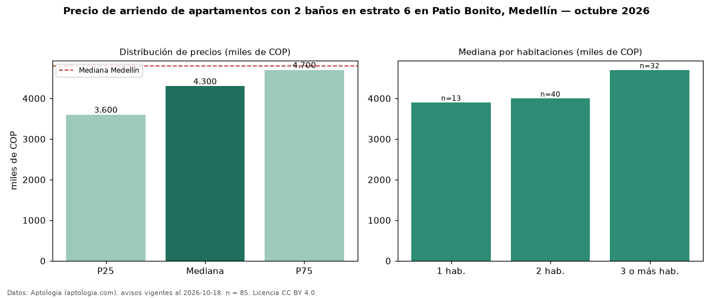

Precio de arriendo de apartamentos con 2 baños en estrato 6 en Patio Bonito, Medellín — octubre 2026
En Patio Bonito, Medellín, la mediana de canon mensual de apartamentos con 2 baños en estrato 6 es COP 4,30 millones, según 85 avisos vigentes. Eso es 7 % menos que la mediana de los apartamentos en estrato 6 en arriendo de Patio Bonito (COP 4,60 millones, n = 133); este segmento reúne el 64 % de esos avisos. Por metro cuadrado, la mediana es COP 50.000/m² al mes (n = 85), 3 % por encima de los apartamentos en estrato 6 en arriendo de Patio Bonito (COP 48.551/m²). El área mediana anunciada es 80 m². El segmento con más oferta es el de 2 habitaciones (40 avisos, mediana COP 4,00 millones); pasar de 1 habitación a 3 o más habitaciones cambia la mediana +21 %. La mediana de todos los apartamentos en arriendo de Medellín es COP 4,80 millones (−10 % de diferencia). La mitad central de los avisos va de COP 3,60 millones a COP 4,70 millones (razón 1,3), una dispersión baja. Datos: Aptología (aptologia.com), CC BY 4.0 — https://www.aptologia.com/arriendo/medellin/patio-bonito. Archivos: PDF, CSV con las cifras y gráfica PNG.

| Avisos únicos | 85 |
|---|---|
| Percentil 25 | COP 3.600.000 |
| Mediana | COP 4.300.000 |
| Percentil 75 | COP 4.700.000 |
| Mediana por m² | COP 50.000 |
Fuente: avisos vigentes de portales inmobiliarios recopilados por Aptología, deduplicados (mínimo 30 avisos únicos por celda). Precios pedidos, no cerrados. Fecha: 2026-10-18.